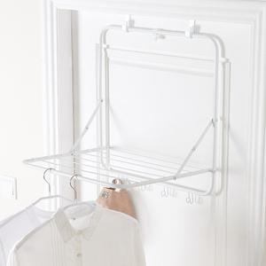
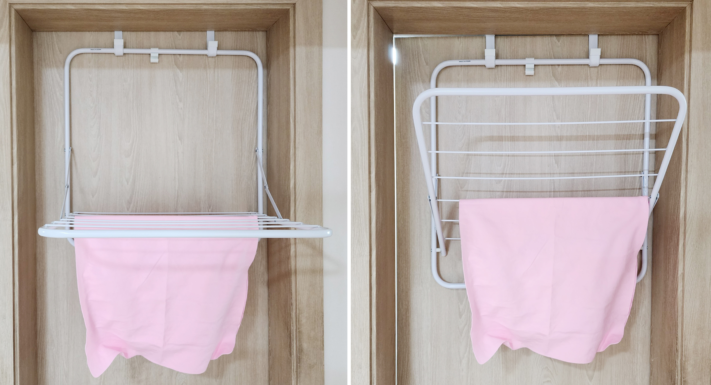
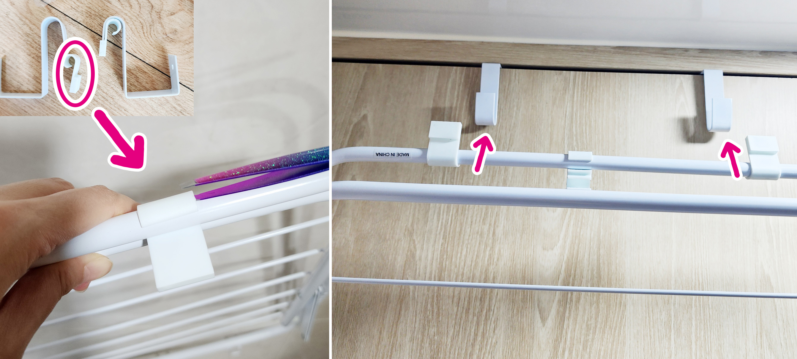
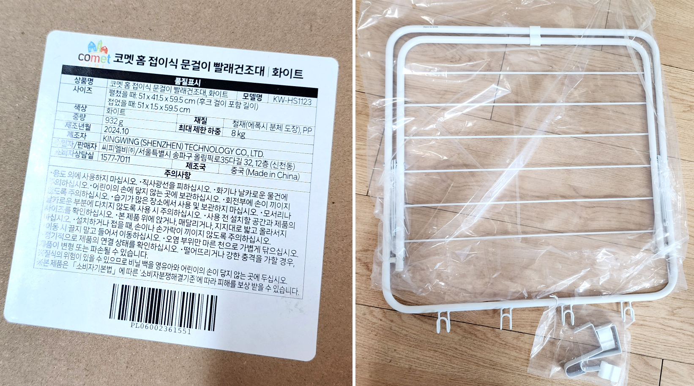
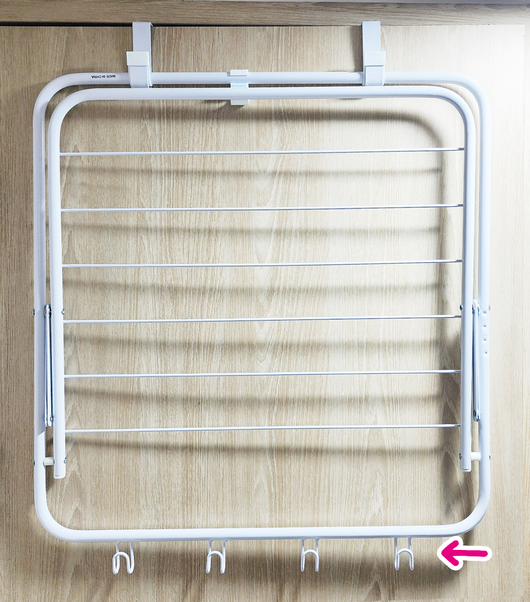

출근 전 수건과 아기 옷만 말리고 싶은데, 큰 건조대를 꺼내야 했어요.
COMET HOME / DOOR DRYING RACK
빨래를 널기만 하면,
바닥 동선이 막히나요?
바닥은 비우고, 데일리 빨래는 문에 거세요.
문 위에 걸어 설치하는 접이식 구조로 수건과 양말처럼 자주 나오는 빨래를 바닥을 차지하지 않고 널어둘 수 있어요.
이 포스팅은 쿠팡 파트너스 활동의 일환으로, 이에 따른 일정액의 수수료를 제공받습니다.
문걸이형 · 접이식 구조

01 floor-free
drying
drying
THE EVERYDAY PROBLEM
수건 몇 장과 양말 때문에
방 한쪽을 내주고 있나요?
빨래가 많지 않아도 건조대를 펴는 순간, 생활 동선은 좁아집니다. 잠깐 쓰려고 꺼낸 건조대를 다시 치우는 일도 반복되고요.
거실과 베란다 사이 좁은 통로까지 빨래가 차지해요.
빨래를 걷을 때까지 방이 계속 어수선해 보여요.
A SPACE THAT FOLDS AWAY
널 때는 넓게,
쓰지 않을 때는 문 쪽으로.
프레임을 앞으로 펼치면 데일리 빨래를 널 수 있고, 사용 후에는 문 쪽으로 접어 둘 수 있습니다.

OPEN
필요한 만큼 펼치기
수건과 양말처럼 자주 나오는 빨래를 위한 공간을 만듭니다.
FOLDED
사용 후 접어 두기
프레임을 접으면 바닥의 건조대를 따로 치울 필요가 없습니다.
HOW IT WORKS
걸고, 펼치고,
접어 두는 3단계

문 상단 후크를 걸어요
문 위에 후크 2개를 걸어 위치를 맞춥니다.
프레임을 펼쳐요
하단 지지대를 문에 받친 후 바깥쪽으로 펼쳐 고정합니다.
사용 후 접어 둬요
빨래를 걷은 뒤 프레임을 문 쪽으로 접어 둡니다.

CHECK BEFORE YOU INSTALL
설치 전, 세 가지만
확인해 주세요.
- 51 × 41.5 × 59.5cm
- 가로 51cm, 깊이 41.5cm, 높이 59.5cm의 접이식 구조입니다.
- 후크 2개와 보호 패드
- 문 상단 후크와 문 표면 보호를 위한 패드가 포함되어 있습니다.
- 데일리 빨래에 알맞게
- 수건, 양말, 속옷처럼 가볍고 자주 나오는 빨래에 적합합니다. 이불이나 두꺼운 의류는 피해주세요.

문에 닿는 부분을 고려한 구조BEFORE YOU BUY
내 문에도 맞을까요?
구매 전 가장 많이 확인하는 세 가지를 정리했어요.
문 위에 바로 걸 수 있나요?
문 상단과 문틀 사이에 2~3mm 이상의 틈이 있는지 먼저 확인해주세요. 틈이 너무 좁거나 특수 규격의 문이라면 적합하지 않을 수 있습니다.
문을 열고 닫을 때 불편하지 않을까요?
보호 패드가 포함되어 있지만, 빨래를 널어 둔 상태에서 문을 세게 여닫는 환경에는 권장하지 않습니다.
어떤 빨래를 널면 좋나요?
수건, 양말, 속옷처럼 가볍고 매일 나오는 빨래에 알맞습니다. 무거운 이불이나 두꺼운 의류에는 사용하지 마세요.
MAKE ROOM FOR DAILY LIFE
바닥을 비우면,
집이 조금 더 편해집니다.
문에 걸어 쓰는 접이식 건조대로 데일리 빨래 자리를 새로 만들어 보세요.
구매 정보 보기이 포스팅은 쿠팡 파트너스 활동의 일환으로, 이에 따른 일정액의 수수료를 제공받습니다.